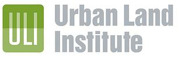

Профессиональная юридическая помощь Оперативно. 24 часа в сутки!
+7 (495) 410-58-20
г. Москва, пер. Большой Овчинниковский, д. 16 Бизнес-Центр "Аркадия", офис 428
Блог Liberty Lawyers Group
Заседание диссертационного совета ИГПРАН
05/12/2013

Президент компании Н.Апаликов и советник по науке д.ю.н. профессор А.Кузбагаров приняли участие в заседании диссертационного совета Института государства и права РАН, в рамках которого была успешно защищена диссертации на...
Читать далее
Семинар "Осуществление зарубежных инвестиций российскими компаниями: изменения налогового законодательства Люксембурга"
18/06/2013
Юридическая компания Liberty Lawyers Group в лице Президента компании Никиты Апаликова и старшего юриста Велислава Стоянова приняла участие в семинаре Международной компании «Эрнст энд Янг» по теме: "Осуществление зарубежных...
Читать далее
Велислав Стоянов "Пределы реализации права на признание иска ответчиком"
16/12/2012
Опубликованно в:
Судебная реформа и проблемы развития гражданского и арбитражного процессуального законодательства: Материалы международной научно-практической конференции. - Москва: РАМ...
Читать далее
Асхат Кузбагаров "К правовой модели примирения сторон по отдельным конфликтам с участием органов внутренних дел РФ: от идеи к реалиям"
08/04/2011
Опубликованно в:
Сборник материалов международной научно-практической конференции «Развитие медиации в России: теория, практика, образование». ВГУ, Воронеж.
Дата: 7-8 апреля 2011
Читать далее
Никита Апаликов "К вопросу о процессуальных сроках в гражданском процессе"
18/02/2011
Опубликовано в:
Судебная реформа и проблемы развития гражданского и арбитражного процессуального законодательства: материалы международной научно-практической конференции. Москва.
Под ред. С.В.Никитина, Н.В.Алекссевой,...
Читать далее
Никита Апаликов "Статья 963 ГК РФ: Вседозволенность страхователя или страховщика?"
19/09/2013
В период консультирования юристов одной из российских страховых компаний, основным направлением деятельности которой было добровольное страхование рисков причинения ущерба вследствие повреждения и хищения транспортных средств, являющихся...
Читать далее
Семинар "Инвестиции частных клиентов"
26/06/2013
Юридическая компания Liberty Lawyers Group в лице старшего юриста Андрея Денисова и старшего юриста Велислава Стоянова приняла участие в семинаре Международной компании «Эрнст энд Янг» по теме: "Инвестиции частных клиентов".
Читать далее
Cеминар Urban Land Institue
23/05/2013
Президент Юридической компании Liberty Lawyers Group Никита Апаликов и старший юрист компании Велислав Стоянов приняли участие в семинаре Urban Land Institue, посвященному проблемам применения ландшафтной архитектуры в России.
Читать далее
Никита Апаликов "К вопросу о правовом содержании сделок, совершаемых гражданами на валютном рынке Forex"
10/11/2011
Опубликованно в:
Вестник Московского университета МВД России, № 11. – С. 114-116.
Дата: 2011 г.
Аннотация: Автор анализирует содержание..
Читать далее
Асхат Кузбагаров "Особенности привлечения к административной ответственности за правонарушения в области безопасности дорожного движения, выявленные пут"
25/03/2011
Материалы ежегодной Всероссийской научно-практической конференции, посвященной памяти д.ю.н., профессора заслуженного деятеля науки РФ Сорокина В.Д. «Актуальные проблемы административного и административного процессуального права. СПб университет МВД...
Читать далее
Интересные видео
Заседание Президиума ВАС РФ
Никита Апаликов в передаче "Среда обитания"
Никита Апаликов в передаче "Среда обитания"
Приговор А. Шабанову